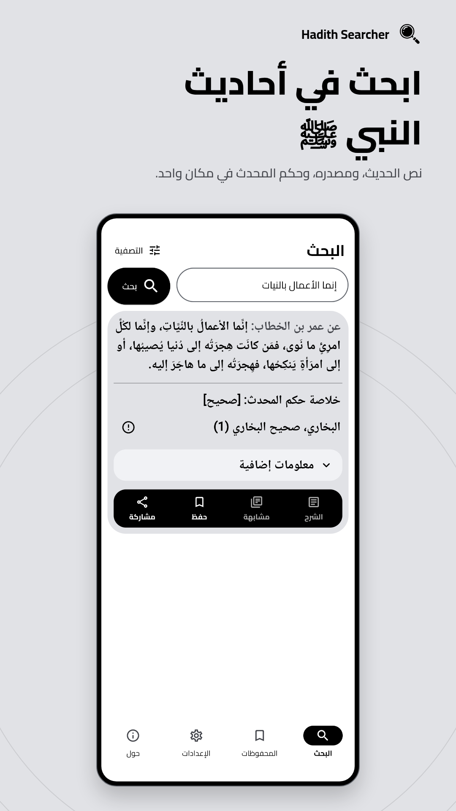
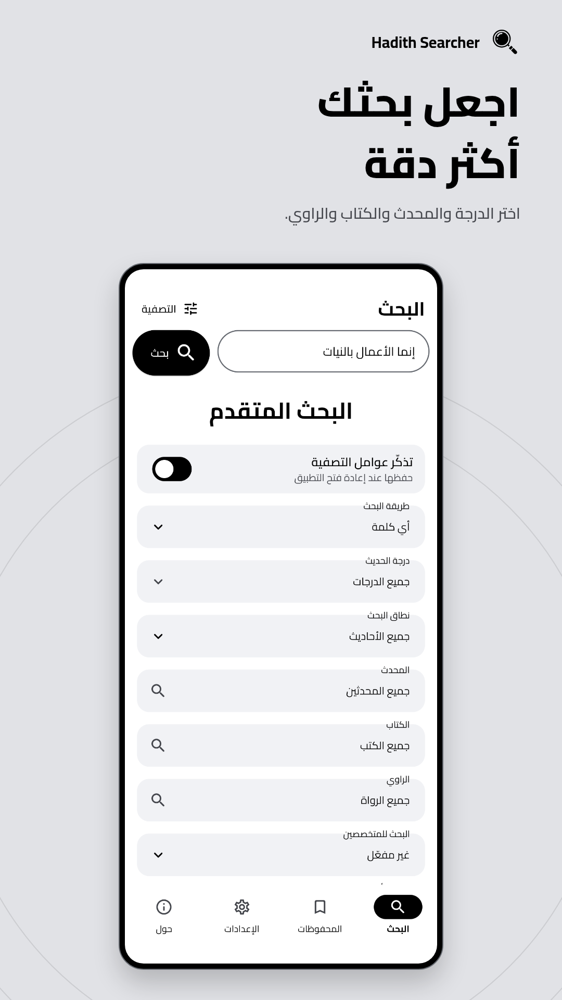
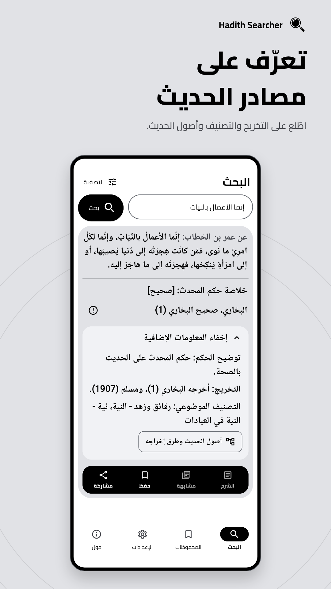
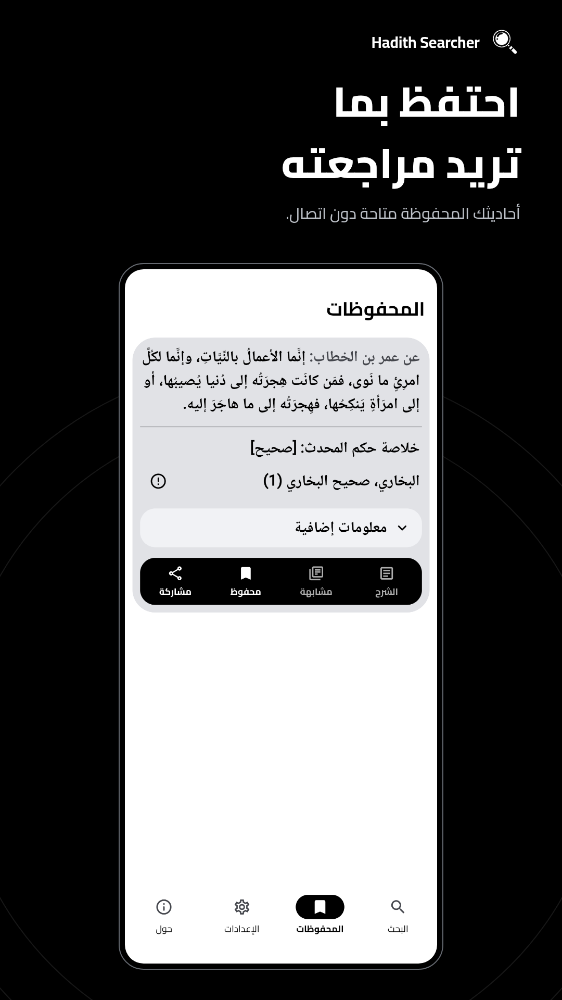
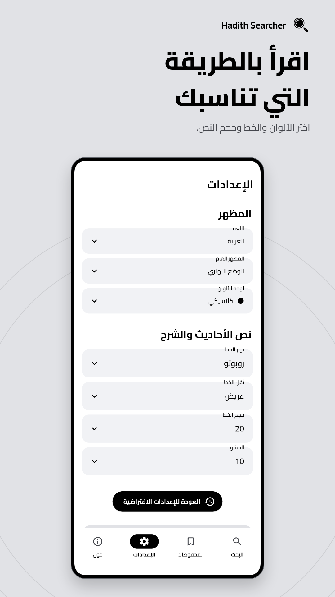
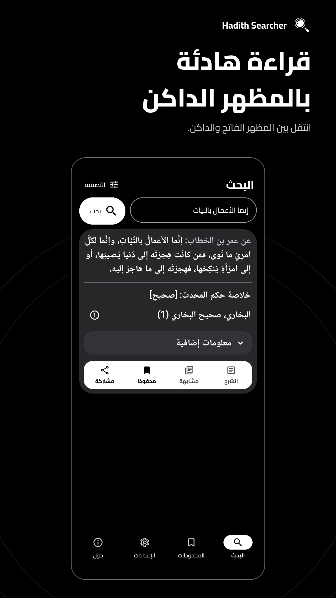

<!doctype html><html lang="ar" dir="rtl"><meta charset="utf-8"><meta name="viewport" content="width=device-width,initial-scale=1">
<title>Hadith Searcher store screenshots</title><style>body{margin:0;font-family:sans-serif}main{display:grid;grid-template-columns:repeat(3,minmax(0,1fr));gap:12px}img{display:block;width:100%;border-radius:12px}@media(max-width:500px){main{grid-template-columns:repeat(2,minmax(0,1fr))}}</style><main><a href="phone/01-search.png"></a><a href="phone/02-filters.png"></a><a href="phone/03-details.png"></a><a href="phone/04-saved.png"></a><a href="phone/05-appearance.png"></a><a href="phone/06-dark.png"></a></main></html>